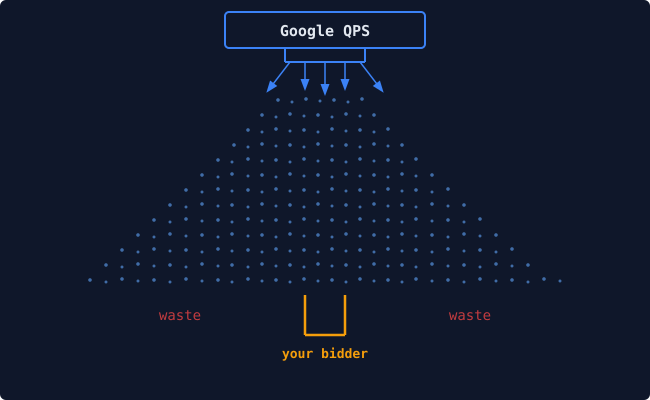

Cat-Scan 用户手册¶
一张图说明问题¶

Google 每秒向你的竞价器发送大量竞价请求。每一秒，数以万计的查询从 Authorized Buyers 交易平台涌向你的端点。你的竞价器对每一条请求进行评估、 决定是否出价、然后在几毫秒内做出响应。
大多数人忽略了一个关键事实：这些信号中的绝大部分都是噪音。 一个典型的 席位在接收 50,000 QPS 时，其中可能有 30,000 条请求对应的是媒体买手永远不会 购买的库存：错误的地理位置、不相关的发布商域名、没有匹配素材的广告尺寸。 你的竞价器仍然需要接收、解析并拒绝每一条请求。这消耗了带宽、算力和费用。
上面的图示将其比作降雨。Google 的 QPS 是顶部的喷嘴，水滴向大面积扩散。 你的竞价器是底部的小桶。所有落在桶外面的水滴（左侧和右侧的部分）就是 浪费。你为此付了费，却没有任何回报。
Cat-Scan 的存在就是为了让桶变宽、让雨变窄。
它通过让你看清浪费发生在哪里（哪些地区、哪些发布商、哪些广告尺寸、 哪些素材），并利用 Google 提供的预定向配置从源头阻止浪费来实现这一目标。
为什么这比想象中更难¶
Google Authorized Buyers 每个席位只提供 10 个预定向配置，外加粗略的 地理分区（美东、美西、欧洲、亚洲）。没有报告 API，所有效果数据来自通过 邮件发送的 CSV 导出文件。AB 预定向界面本身虽然可用，但很难全面查看跨配置 的整体情况，也很难撤销出错的更改。
Cat-Scan 弥补了这些差距：
- 它从 CSV 导出文件重建报告（手动上传或 Gmail 自动导入），导入时 自动去重，重复处理不会造成重复计数。
- 它展示完整的 RTB 漏斗，从原始 QPS 到出价、胜出、展示、点击和 花费，可按任意维度拆分：地理、发布商、广告尺寸、素材、配置。
- 它提供安全的预定向管理，包括历史记录、分阶段变更、试运行预览和 一键回滚。
- 它运行一个优化器，对细分市场评分并提出配置变更建议，配有工作流 防护机制（保守/平衡/激进），确保未经审核的变更不会生效。
本手册面向谁¶
本手册分为两个路径，因为 Cat-Scan 服务于两个截然不同的角色：
媒体买手和投放经理使用 Cat-Scan 了解预算流向、发现浪费、管理素材、 调整预定向以及审批优化建议。他们关注 CPM、胜出率和 ROAS。他们的章节聚焦于 界面展示内容、数据含义以及应采取的行动。
运维和平台工程师使用 Cat-Scan 部署、监控和排障。他们关注容器、健康 端点和查询计划。他们的章节聚焦于架构、部署流水线、数据库操作和故障手册。
两个路径共享基础内容（入门、术语表），章节之间相互交叉引用。当媒体买手 报告"数据新鲜度异常"、运维工程师调试背后的查询时，双方应该能指向同一个 术语表条目并相互理解。
如何阅读本手册¶
- 第零部分面向所有人。从这里开始。
- 第一部分是媒体买手路径。如果你从事投放、优化或采买工作，这是你的路径。
- 第二部分是运维路径。如果你负责部署、监控或管理 Cat-Scan，这是你的路径。
- 第三部分是共享参考：术语表、常见问题和 API 索引。
你不需要线性阅读。每个章节都是独立的。跟随与你角色匹配的链接即可。
目录¶
第零部分：入门¶
所有人都需要阅读。
-
第 0 章：什么是 Cat-Scan？ 平台做什么、面向谁，以及你需要先了解的核心概念：席位、QPS、预定向、 RTB 漏斗。
-
第 1 章：登录 认证方式（Google OAuth、本地账户）、登录页面、登录失败时的处理方法， 以及席位选择器的使用。
-
第 2 章：浏览仪表盘 侧边栏、席位切换、语言选择器、新账户引导清单，以及页面组织方式。
第一部分：媒体买手路径¶
面向媒体买手、投放经理和优化工程师。
-
第 3 章：理解你的 QPS 漏斗 首页内容。如何解读漏斗：展示、出价、胜出、花费、胜出率、CTR、CPM。 "浪费"的具体含义。配置卡片及其字段控制的内容。
-
第 4 章：按维度分析浪费 三个浪费分析视图及其使用场景：
- 地理（
/qps/geo）：哪些国家和城市消耗 QPS 却没有转化。 - 发布商（
/qps/publisher）：哪些域名和应用表现不佳。 -
尺寸（
/qps/size）：哪些广告尺寸有流量但没有匹配素材。 Google 发送约 400 种不同尺寸；对固定尺寸展示广告来说大多无关。 -
第 5 章：管理素材 素材库（
/creatives）：按格式浏览、按效果层级筛选、按 ID 搜索。 缩略图、格式标签、目标页诊断。活动聚类（/campaigns）：拖放操作、 AI 自动聚类、未分配素材池。 -
第 6 章：预定向配置 预定向配置控制什么（地区、尺寸、格式、平台、最大 QPS）。如何解读配置 卡片。通过试运行预览应用变更。变更历史时间线（
/history）。回滚： 工作原理、存在意义和使用时机。 -
第 7 章：优化器（BYOM） 自带模型：注册外部评分端点、验证、激活。评分-建议-审批-应用的生命周期。 工作流预设：保守、平衡、激进。经济指标：有效 CPM、托管成本基线、效率 摘要。建议的内容及评估方法。
-
第 8 章：转化与归因 连接转化来源。像素集成。Webhook 设置：HMAC 签名、共享密钥、速率限制。 就绪检查。摄入统计。"转化健康"的含义及安全状态页面的解读。
-
第 9 章：数据导入 数据如何进入 Cat-Scan，以及为什么这很重要。手动 CSV 上传 （
/import）：拖放、列映射、验证、大文件分块上传。Gmail 自动导入： 工作原理、状态检查、失败处理。数据新鲜度网格：每个日期和报告类型的 "已导入"与"缺失"含义。去重保证。 -
第 10 章：解读报告 花费统计、配置效果面板、端点效率指标。如何解读趋势。每日细分展示内容。 快照对比：预定向变更前后的对比。
第二部分：运维路径¶
面向平台工程师、SRE 和系统管理员。
-
第 11 章：架构概述 系统拓扑：FastAPI 后端、Next.js 14 前端、Postgres（Cloud SQL）、 BigQuery。为什么同时使用两个数据库（成本、延迟、预聚合、连接处理）。 容器布局：api、dashboard、oauth2-proxy、cloudsql-proxy、nginx。 认证信任链：OAuth2 Proxy 设置
<AUTH_HEADER>，nginx 传递，API 信任。 -
第 12 章：部署 CI/CD 流水线：GitHub Actions
build-and-push.yml在推送时构建镜像；deploy.yml仅手动触发（需输入DEPLOY确认）。Artifact Registry 镜像标签（sha-XXXXXXX）。部署流程：VM 上 git pull、docker compose pull、重建、清理。部署后验证：健康检查、合约检查。为什么禁用了自动部署 （2026 年 1 月事故）。如何验证部署：curl /api/health | jq .git_sha。 -
第 13 章：健康监控与诊断 健康端点：
/api/health（存活检查）、/system/data-health（数据完整性）。 系统状态页面（/settings/system）：Python、Node、FFmpeg、数据库、磁盘、 缩略图。运行时健康脚本：diagnose_v1_buyer_report_coverage.sh、run_v1_runtime_health_strict_dispatch.sh。金丝雀认证：CATSCAN_CANARY_EMAIL、CATSCAN_BEARER_TOKEN。CI 工作流：v1-runtime-health-strict.yml以及 PASS/FAIL/BLOCKED 的含义。 -
第 14 章：数据库操作 生产环境仅使用 Postgres。通过代理容器连接 Cloud SQL。关键表及其规模：
rtb_daily（约 8400 万行）、rtb_bidstream（约 2100 万行）、rtb_quality、rtb_bid_filtering。关键索引：(buyer_account_id, metric_date DESC)。连接模型：按请求创建连接（无连接池）、run_in_executor实现异步。语句超时（SET LOCAL statement_timeout）。 数据保留设置。BigQuery 的角色：原始数据的批处理仓库；Postgres 向应用 提供预聚合数据。 -
第 15 章：故障排除手册 已知故障模式及解决方法：
- 登录循环：Cloud SQL Proxy 宕机，
_get_or_create_oauth2_user静默 失败，/auth/check返回{authenticated:false}，前端重定向循环。 三层修复方案。检测方法：浏览器重定向计数器、/auth/check返回 503。 - 数据新鲜度超时：大表执行顺序扫描而未使用索引。症状：
/uploads/data-freshness超时或返回 500。诊断：pg_stat_activity、EXPLAIN ANALYZE。修复模式：generate_series + EXISTS。 - Gmail 导入失败：
/gmail/status显示错误。检查 Cloud SQL Proxy 容器和未读邮件数量。 -
容器启动顺序：
cloudsql-proxy必须在api之前就绪。 错误表现：API 日志中出现连接拒绝。 -
第 16 章：用户与权限管理 管理面板（
/admin）：创建用户（本地账户和 OAuth 预创建）、角色管理、 按席位权限。服务账户：上传 GCP 凭证 JSON，解锁的功能（席位发现、预定向 同步）。受限用户：可见和隐藏的内容。审计日志：跟踪的操作、筛选方式、 保留期限。 -
第 17 章：集成 GCP 服务账户和项目连接。Google Authorized Buyers API：席位发现、预定向 配置同步、RTB 端点同步。Gmail 集成：用于自动报告导入的 OAuth2。 语言 AI 供应商：Gemini、Claude、Grok（用于素材语言检测和不匹配告警）。 转化 Webhook：端点注册、HMAC 验证、速率限制、新鲜度监控。
第三部分：参考¶
两个路径共享。
-
术语表 每个术语有两种语言。媒体买手栏："预定向"是"控制哪些竞价请求到达你的 竞价器的规则"。运维栏："预定向"是"从 AB API 同步的可变实体，存储在
pretargeting_configs中，通过/settings/pretargeting暴露"。双方 使用同一个词；各自有不同的定义。 -
常见问题 按角色标记。媒体买手的问题（"为什么我的覆盖率是 74%？"）和运维工程师的 问题（"为什么运行时健康严格检查失败了？"）。答案交叉链接到相关章节。
-
API 快速参考 按领域分组的全部 118+ 端点：核心、席位、素材、活动、分析、设置、管理、 优化器、转化、集成、上传、快照、认证。方法、路径、关键参数及返回内容。 不能替代
/api/docs的 OpenAPI 规范，但提供可导航的索引。